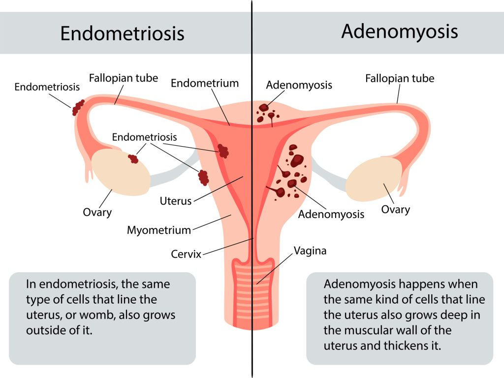

Adenomyosis
Understanding Adenomyosis
Adenomyosis is a condition that affects the uterus, the pear-shaped organ in the pelvis where a baby develops during pregnancy. It occurs when the tissue normally found lining the inside of the uterus (called endometrial tissue) starts growing into the muscular wall of the uterus.

Each month during your menstrual cycle, this misplaced tissue behaves just like the normal lining: it thickens, breaks down, and tries to bleed. But because it's trapped inside the muscle wall, it can't escape properly. This can cause the uterus to swell, leading to pain and heavier periods.
Many people with adenomyosis have no noticeable symptoms or only mild ones—about one in three experience none at all. For others, common symptoms include:
- Very heavy or prolonged menstrual bleeding
- Severe cramping or sharp pain in the pelvis during periods
- Ongoing pelvic pain, even outside of periods
- Pain during sexual intercourse
- A feeling of pressure or tenderness in the lower abdomen due to an enlarged uterus
- Bloating or a sense of fullness in the belly
- Abnormal bleeding patterns
- In some cases, difficulty getting pregnant
The exact cause of adenomyosis isn't fully understood, but symptoms often improve or disappear after menopause. Hormone-based treatments can help ease pain and reduce heavy bleeding. In more severe cases, surgery to remove the uterus (hysterectomy) can provide a complete cure.
If symptoms are bothersome, further tests may be needed to confirm adenomyosis or to distinguish it from similar conditions, such as endometriosis. Common tests include:
- An ultrasound scan
- An MRI scan
Understanding the Causes of Adenomyosis
The precise reason why adenomyosis develops remains unclear to experts. However, several ideas have been proposed based on research, and the condition's growth is closely tied to estrogen, a key female hormone. Symptoms typically ease or vanish after menopause when estrogen levels drop naturally.
Common theories about how adenomyosis starts include:
- Tissue invasion: The lining of the uterus may push into the muscular wall, sometimes triggered by uterine surgery like a cesarean section, fibroid removal, or dilation and curettage (D&C).
- Developmental origin: Endometrial-like tissue might be present in the uterine muscle from the time the uterus forms in fetal development.
- Post-childbirth inflammation: Swelling in the uterine lining after delivery could disrupt the boundary between the lining and the muscle layer.
- Stem cell involvement: Cells from bone marrow might enter the uterine muscle and change into endometrial-like cells.
- Backward flow during periods: Menstrual blood flowing backward into the pelvis (retrograde menstruation), which is also linked to endometriosis.
Certain factors can increase the chances of developing adenomyosis, such as:
- Being in your 40s or 50s, though improved imaging shows it's also common in younger women.
- Having given birth (especially multiple times), due to changes in the uterus during pregnancy and delivery.
- Previous uterine procedures or trauma.
- Longer overall exposure to estrogen, from factors like early start of periods or higher body weight.
Adenomyosis frequently occurs alongside other conditions, making symptoms overlap and diagnosis trickier. It often appears with endometriosis (in up to 70% of cases in some studies) or uterine fibroids (in 35-50% of cases). When multiple issues are present, pain and bleeding can be more severe.
The condition can also lead to complications beyond daily discomfort:
- Chronic anemia from heavy periods, causing fatigue, weakness, shortness of breath, and other issues due to low red blood cell counts.
- Reduced quality of life, with ongoing pain or bleeding limiting work, social activities, or enjoyment of hobbies.
- Potential fertility challenges—research shows adenomyosis may make it harder to conceive or increase risks during pregnancy, such as miscarriage, preterm delivery, or babies born smaller than expected. The exact link to infertility is still being studied, but it can affect implantation and uterine function.
Early awareness and discussion with a healthcare provider can help manage these risks effectively.
How Adenomyosis Is Diagnosed
Diagnosing adenomyosis can be challenging because its symptoms often overlap with other common gynecological issues, such as uterine fibroids (non-cancerous growths in the uterine wall), endometriosis (tissue similar to the uterine lining growing outside the uterus), or endometrial polyps (overgrowths inside the uterine cavity). This similarity means doctors usually need to rule out these other conditions first.
In the past, the only definitive way to confirm adenomyosis was by examining the uterus under a microscope after a hysterectomy (surgical removal of the uterus). Today, thanks to better imaging technology, doctors can often make a strong presumptive diagnosis without surgery.
The diagnostic process typically starts with a detailed discussion of your symptoms and medical history, followed by:
- Pelvic exam: Your doctor gently checks the size, shape, and tenderness of your uterus and surrounding areas. An enlarged or softer uterus that's painful when touched can raise suspicion for adenomyosis.
- Transvaginal ultrasound: This is often the first imaging test. A small wand-like device is placed in the vagina to send sound waves that create clear pictures of the uterus. Signs like a thickened uterine wall, uneven muscle texture, or small cysts may point to adenomyosis.
- MRI (Magnetic Resonance Imaging): Considered the most accurate non-invasive tool, an MRI provides detailed views of the uterine layers. It can show thickening of the junctional zone (the area between the inner and outer uterine layers) or other characteristic patterns of adenomyosis.
Additional tests that might be used in some cases include:
- Sonohysterography: Saline (sterile water) is infused into the uterus during an ultrasound to get a better view of the cavity and wall.
- Endometrial biopsy: A small sample of the uterine lining is taken and examined in a lab, mainly to exclude serious issues like endometrial cancer, though it cannot confirm adenomyosis itself.
- Hysteroscopy: In rare cases, a thin camera is inserted into the uterus to directly look inside the cavity.
With modern transvaginal ultrasound and MRI, experienced specialists can diagnose adenomyosis accurately in most cases without needing surgery. If symptoms are severe and treatments aren't helping, hysterectomy may still be considered both for relief and final confirmation.
If you're experiencing heavy periods, pelvic pain, or other related issues, talking to a gynecologist early can lead to timely evaluation and management.
Managing and Treating Adenomyosis
For many people, the discomfort from adenomyosis naturally improves or disappears after menopause, when estrogen levels drop. Until then, treatments focus on easing pain, reducing heavy bleeding, and improving daily life. The best approach depends on your age, symptom severity, and whether you want to have children in the future.
Common treatment options include:
- Pain relief medications: Over-the-counter anti-inflammatory drugs like ibuprofen or naproxen can reduce cramping and lighten blood flow. Starting them a day or two before your period often works best.
- Non-hormonal options: Medicines such as tranexamic acid can help control heavy menstrual bleeding by making clots more stable.
- Hormonal therapies: Birth control pills, patches, vaginal rings, or progestin-only methods (like injections or continuous pills) can regulate cycles and lessen symptoms. A hormonal IUD (such as Mirena) releases progestin directly into the uterus, often reducing bleeding significantly or even stopping periods altogether.
For more advanced or targeted approaches:
- Uterine artery embolization (UAE): A minimally invasive procedure where tiny particles block blood flow to the affected areas, shrinking the adenomyosis tissue and relieving symptoms. It's often used for fibroids but can help with adenomyosis too.
- Adenomyomectomy: Surgery to carefully remove the adenomyosis patches from the uterine muscle while preserving the uterus, suitable for those wanting to maintain fertility.
- Hysterectomy: Removal of the uterus, which fully cures adenomyosis since there's no more tissue to cause issues. Ovaries are usually left in place unless there's another reason to remove them. This is a definitive option if other treatments fail and future pregnancy isn't desired.
Simple home remedies can also provide relief:
- Taking warm baths to relax muscles.
- Applying a heating pad to your lower abdomen.
- Practicing gentle yoga or relaxation techniques.
If left unmanaged, adenomyosis may contribute to ongoing anemia from blood loss, chronic pain that affects daily activities, or challenges with fertility and pregnancy (like higher risks of miscarriage or early delivery). There's no known way to prevent it, but early treatment can make a big difference.
Unlike endometriosis (where similar tissue grows outside the uterus), adenomyosis involves growth inside the uterine muscle and tends to cause heavier periods rather than pain spread across the pelvis.
See your doctor—such as your primary care provider or a gynecologist—if you have very heavy bleeding, intense cramps, pain during intimacy, or a constant heavy feeling in your belly. Preparing for your visit by noting symptoms, medications, and questions can help get the right care sooner.